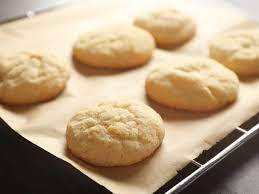

Cookies

Description
Simple plain cookies that will melt in your mouth!
Ingredients
- 1 cup white sugar
- 1 cup packed brown sugar
- 1 egg
- 1 cup vegetable oil
- 1 cup butter
- ½ teaspoon salt
- 1 teaspoon baking soda
- 1 tablespoon milk
- 1 teaspoon cream of tartar
- 1 cup rolled oats
- 1 teaspoon vanilla extract
- 4 cups all-purpose flour
Steps
- Preheat oven to 325 degrees F
- In a small bowl, dissolve baking soda in milk
- In a seperate bowl, cream together the sugars and the egg.
- Then combine the oil, creamed butter, baking soda mixture, and cream of tartar
- Mix in flour and oats
- Allow for dough to chill in fridge for 1 hour
- Make small balls and flatten them with a greased or non-stick cookie sheet
- Bake for 10 to 15 minutes.